Research Software Engineering : TopoStat Case Study
![]()
Scan This
Who Am I?
- Research Software Engineer
- Education
- BSc Zoology & Genetics
- MSc Genetic Epidemiology
- Background
- ~9 years Genetics Statistician
- ~8 years Medical Statistician
- ~4 years Data Scientist at Telematics Company
TopoStats
- Python Package
- Pyne Lab (School of Chemical, Materials and Biological Engineering)
- Batch processing Atomic Force Microscopy (AFM)
- Image DNA, RNA, Proteins, Perovskite, silicone, bacteria and more!
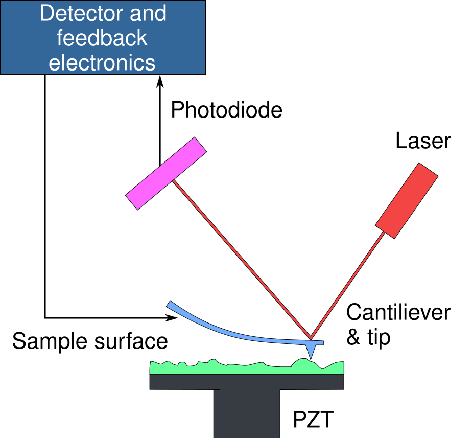
TopoStats (cont.)
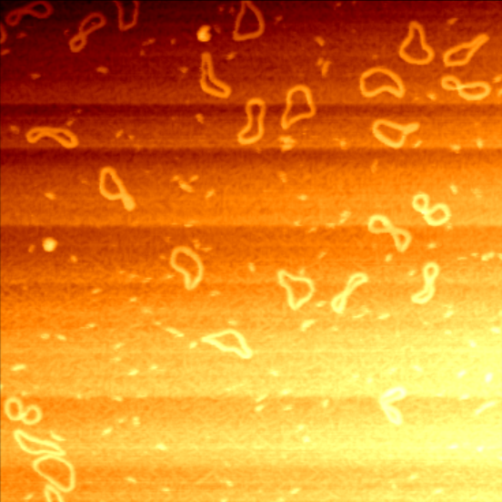
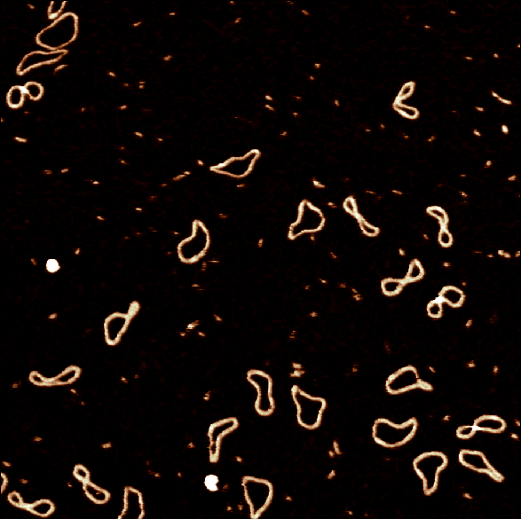
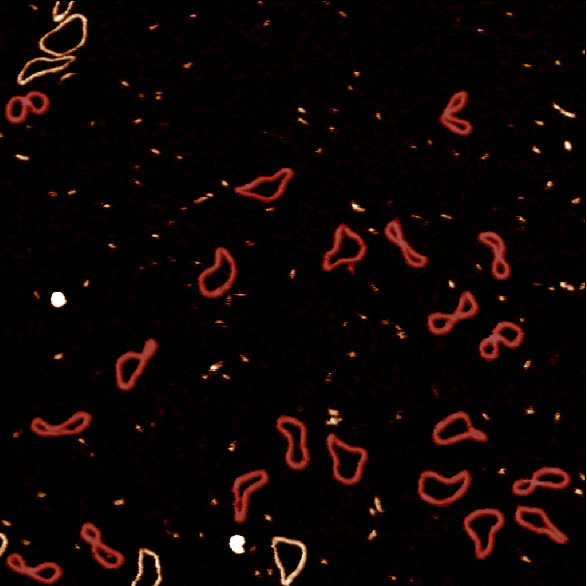
- Python toolkit for automated processing of atomic force microscopy (AFM) data.
- Free and open-source research software
- Developed by a small team at the University of Sheffield
- Takes raw noisy, non-flat images
- Flattens them
- Detects structures in the data
- Calculates statistics for the structures
RSE & TopoStats
- 2020-04 RSE Code Clinic - Python 2.7 deprecation & Gwyddion
- 2021-03 RSE Support - Containerised to Docker
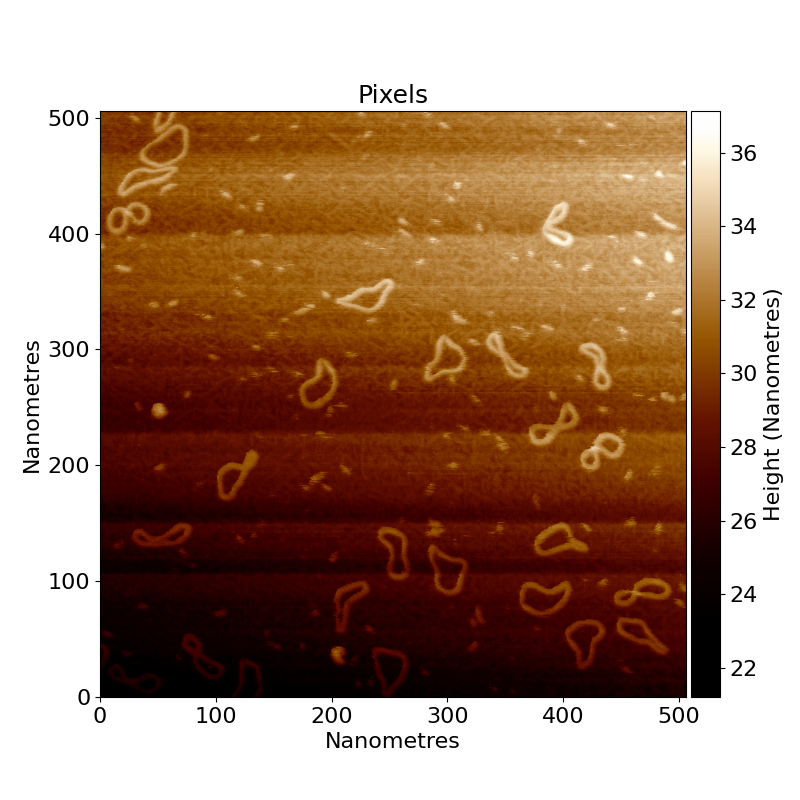
Dependencies
Gwyddion
- AFM analysis software
- Written in C++
- Almost no code comments
- Slow to use (GUI only)
- No automation
- No standardisation
- Near impossible to contribute to / edit
PyGwy
- Python binding to Gwyddion’s methods and functions.
- Written in outdated Python 2.7
- Will not be updated
- Lacking in documentation
- Difficult to contribute to
March 2022: Installation procedure
Install software
- Uninstall all python, gwydidon, pygobject, pycairo, pygtk installations
- Delete all caches of the above softwares
- Install Anaconda 32 bit ()
- Install Python 2.7
- Install pycharm (register for an account if necessary)
- Install Gwyddion
- Download a set of additional files from Google drive, hosted by the lab
March 2022: Installation procedure (cont.)
Set up the environment
- Import the environment from the
gwyconda.ymlfile. - Follow some images to determine which checkboxes to select.
- Locate your python environment
- Install the PyGTK2 packages:
- Install PyGTK
- Install PyCairo
- Install PyGObject
- Manually add the paths for these into Anaconda
- Change the Gwyconda environment directory to the bin folder in Gwyddion
March 2022: Installation procedure (cont. cont.)
Set up PyCharm
- Open a new project and set the interpreter to Gwyconda
- Create a python file
- Append the path of the bin folder in Gwyddion
- Ignore all runtime warnings
- 💥 Go back to the start because something went wrong in the installation 💥
- 🔬 😿
Software Woes
Usage
- Very hard to install
- Outdated dependencies
- Hard-coded values
- Buggy!
Extending
- Contributing was a mess
- No versioning, no releases
- No review process
- No tests
Hardly anyone used or knew about it
FAIR(4RS) Principles
- Findable
- Easy to find, with a unique identifier for each version ❌
- Metadata (summary info, eg License, Website, coding language) ❌
- Accessible
- Retrievable using a free and open protocol ✅
- Metadata are accessible, even when the software is no longer available ❌
- Interoperable
- Software uses data in a way that meets community standards ✅
- Software includes references to other objects ❌
- Reusable
- Metadata (how to use) and License ❌
- Detailled provenance (information on its context, maintainers and dependencies) ❌
- 🔬 😿 + 💻 😿
FAIR Principles for Research Software (FAIR4RS Principles) doi:10.15497/RDA00068
✨ TopoStats 2.0 ✨
- Remove external dependencies
- Re-write all functionality in Python 3
- Modular object-orientated design
- small functions/methods
- unit tests of functions/methods
- regression tests for overall processing
- Configuration via plain-text YAML 👉
- Configurations saved with output (reproducibility)
- Processes images in parallel 🧑🤝🧑
base_dir: ./ # Directory in which to search for data files
output_dir: ./output # Directory to output results to
log_level: info # Verbosity of output. Options: warning, error, info, debug
cores: 2 # Number of CPU cores to utilise for processing multiple files simultaneously.
file_ext: .spm # File extension of the data files.
loading:
channel: Height # Channel to pull data from in the data files.
extract: raw # Array to extract when loading .topostats files.
filter:
run: true # Options : true, false
row_alignment_quantile: 0.5 # lower values may improve flattening of larger features
threshold_method: std_dev # Options : otsu, std_dev, absolute
otsu_threshold_multiplier: 1.0
threshold_std_dev:
below: 10.0 # Threshold for data below the image background
above: 1.0 # Threshold for data above the image background
threshold_absolute:
below: -1.0 # Threshold for data below the image background
above: 1.0 # Threshold for data above the image background
gaussian_size: 1.0121397464510862 # Gaussian blur intensity in px
gaussian_mode: nearest # Mode for Gaussian blurring. Options : nearest, reflect, constant, mirror, wrap
# Scar remvoal parameters. Be careful with editing these as making the algorithm too sensitive may
# result in ruining legitimate data.
remove_scars:
run: false
removal_iterations: 2 # Number of times to run scar removal.
threshold_low: 0.250 # lower values make scar removal more sensitive
threshold_high: 0.666 # lower values make scar removal more sensitive
max_scar_width: 4 # Maximum thickness of scars in pixels.
min_scar_length: 16 # Minimum length of scars in pixels.
grains:
run: true # Options : true, false
# Thresholding by height
threshold_method: std_dev # Options : std_dev, otsu, absolute, unet
otsu_threshold_multiplier: 1.0
threshold_std_dev:
below: 10.0 # Threshold for grains below the image background
above: 1.0 # Threshold for grains above the image background
threshold_absolute:
below: -1.0 # Threshold for grains below the image background
above: 1.0 # Threshold for grains above the image background
direction: above # Options: above, below, both (defines whether to look for grains above or below thresholds or both)
# Thresholding by area
smallest_grain_size_nm2: 50 # Size in nm^2 of tiny grains/blobs (noise) to remove, must be > 0.0
absolute_area_threshold:
above: [300, 3000] # above surface [Low, High] in nm^2 (also takes null)
below: [null, null] # below surface [Low, High] in nm^2 (also takes null)
remove_edge_intersecting_grains: true # Whether or not to remove grains that touch the image border
unet_config:
model_path: null # Path to a trained U-Net model
grain_crop_padding: 2 # Padding to apply to the grain crop bounding box
upper_norm_bound: 5.0 # Upper bound for normalisation of input data. This should be slightly higher than the maximum desired / expected height of grains.
lower_norm_bound: -1.0 # Lower bound for normalisation of input data. This should be slightly lower than the minimum desired / expected height of the background.
vetting:
class_conversion_size_thresholds: null # Class conversion size thresholds, list of tuples of 3 integers and 2 integers, ie list[tuple[tuple[int, int, int], tuple[int, int]]] eg [[[1, 2, 3], [5, 10]]] for each region of class 1 to convert to 2 if smaller than 5 nm^2 and to class 3 if larger than 10 nm^2.
class_region_number_thresholds: null # Class region number thresholds, list of lists, ie [[class, low, high],] eg [[1, 2, 4], [2, 1, 1]] for class 1 to have 2-4 regions and class 2 to have 1 region. Can use None to not set an upper/lower bound.
class_size_thresholds: null # Class size thresholds (nm^2), list of tuples of 3 integers, ie [[class, low, high],] eg [[1, 100, 1000], [2, 1000, None]] for class 1 to have 100-1000 nm^2 and class 2 to have 1000-any nm^2. Can use None to not set an upper/lower bound.
nearby_conversion_classes_to_convert: null # Class conversion for nearby regions, list of tuples of two-integer tuples, eg [[[1, 2], [3, 4]]] to convert class 1 to 2 and 3 to 4 for small touching regions
class_touching_threshold: 5 # Number of dilation steps to use for detecting touching regions
keep_largest_labelled_regions_classes: null # Classes to keep the only largest regions for, list of integers eg [1, 2] to keep only the largest regions of class 1 and 2
class_connection_point_thresholds: null # Class connection point thresholds, [[[class_1, class_2], [min, max]]] eg [[[1, 2], [1, 1]]] for class 1 to have 1 connection point with class 2
grainstats:
run: true # Options : true, false
edge_detection_method: binary_erosion # Options: canny, binary erosion. Do not change this unless you are sure of what this will do.
cropped_size: -1 # Length (in nm) of square cropped images (can take -1 for grain-sized box)
extract_height_profile: true # Extract height profiles along maximum feret of molecules
disordered_tracing:
run: true # Options : true, false
min_skeleton_size: 10 # Minimum number of pixels in a skeleton for it to be retained.
pad_width: 1 # Pixels to pad grains by when tracing
mask_smoothing_params:
gaussian_sigma: 2 # Gaussian smoothing parameter 'sigma' in pixels.
dilation_iterations: 2 # Number of dilation iterations to use for grain smoothing.
holearea_min_max: [0, null] # Range (min, max) of a hole area in nm to refill in the smoothed masks.
skeletonisation_params:
method: topostats # Options : zhang | lee | thin | topostats
height_bias: 0.6 # Percentage of lowest pixels to remove each skeletonisation iteration. 1 equates to zhang.
pruning_params:
method: topostats # Method to clean branches of the skeleton. Options : topostats
max_length: 10.0 # Maximum length in nm to remove a branch containing an endpoint.
height_threshold: # The height to remove branches below.
method_values: mid # The method to obtain a branch's height for pruning. Options : min | median | mid.
method_outlier: mean_abs # The method to prune branches based on height. Options : abs | mean_abs | iqr.
nodestats:
run: true # Options : true, false
node_joining_length: 7.0 # The distance in nanometres over which to join nearby crossing points.
node_extend_dist: 14.0 # The distance in nanometres over which to join nearby odd-branched nodes.
branch_pairing_length: 20.0 # The length in nanometres from the crossing point to pair and trace, obtaining FWHM's.
pair_odd_branches: false # Whether to try and pair odd-branched nodes. Options: true and false.
pad_width: 1 # Pixels to pad grains by when tracing (should be the same as disordered_tracing).
ordered_tracing:
run: true
ordering_method: nodestats # The method of ordering the disordered traces.
pad_width: 1 # Pixels to pad grains by when tracing (should be the same as disordered_tracing).
splining:
run: true # Options : true, false
method: "rolling_window" # Options : "spline", "rolling_window"
rolling_window_size: 20.0e-9 # size in nm of the rolling window.
spline_step_size: 7.0e-9 # The sampling rate of the spline in metres.
spline_linear_smoothing: 5.0 # The amount of smoothing to apply to linear features.
spline_circular_smoothing: 5.0 # The amount of smoothing to apply to circular features.
spline_degree: 3 # The polynomial degree of the spline.
curvature:
run: true # Options : true, false
colourmap_normalisation_bounds: [-0.5, 0.5] # Radians per nm to normalise the colourmap to.
plotting:
run: true # Options : true, false
style: topostats.mplstyle # Options : topostats.mplstyle or path to a matplotlibrc params file
savefig_format: null # Options : null, png, svg or pdf. tif is also available although no metadata will be saved. (defaults to png) See https://matplotlib.org/stable/api/_as_gen/matplotlib.pyplot.savefig.html
savefig_dpi: 100 # Options : null (defaults to the value in topostats/plotting_dictionary.yaml), see https://afm-spm.github.io/TopoStats/main/configuration.html#further-customisation and https://matplotlib.org/stable/api/_as_gen/matplotlib.pyplot.savefig.html
pixel_interpolation: null # Options : https://matplotlib.org/stable/gallery/images_contours_and_fields/interpolation_methods.html
image_set: core # Options : all, core
zrange: [null, null] # low and high height range for core images (can take [null, null]). low <= high
colorbar: true # Options : true, false
axes: true # Options : true, false (due to off being a bool when parsed)
num_ticks: [null, null] # Number of ticks to have along the x and y axes. Options : null (auto) or integer > 1
cmap: null # Colormap/colourmap to use (default is 'nanoscope' which is used if null, other options are 'afmhot', 'viridis' etc.)
mask_cmap: blue_purple_green # Options : blu, jet_r and any in matplotlib
histogram_log_axis: false # Options : true, false
summary_stats:
run: true # Whether to make summary plots for output data
config: nullDocumentation
- Every function, class and file is annotated in-line with
docstrings. - Describe the parameters and return values
- They make the code easier to read
- The documentation is built and deployed automatically to a website
- Easily searchable online
Versioning
- Git version control of all code
- Versioned releases made automatically from GitHub to PyPI
- Documentation is versioned too
- Users have stable software whilst new features are developed
- Old versions archived and available
- DOI via ORDA
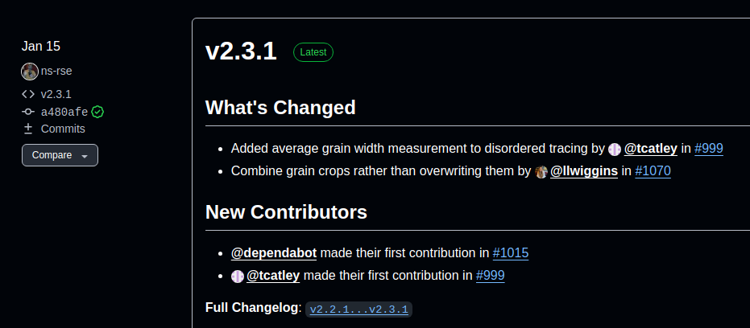 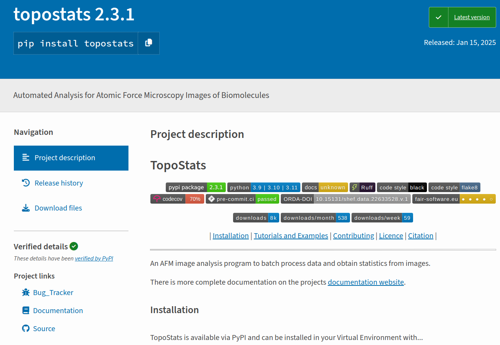
Linting and Formatting
Make code universally understandable :::{.incremental}
- Pylint, ruff, black
- Code checked automatically on Git commit via pre-commit
- Pull-requests run checks via Continuous Integration :::
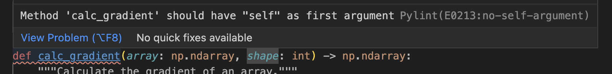
Tests
- Extensive test-suite
- Unit tests for each function
- Integration tests
- Stability!
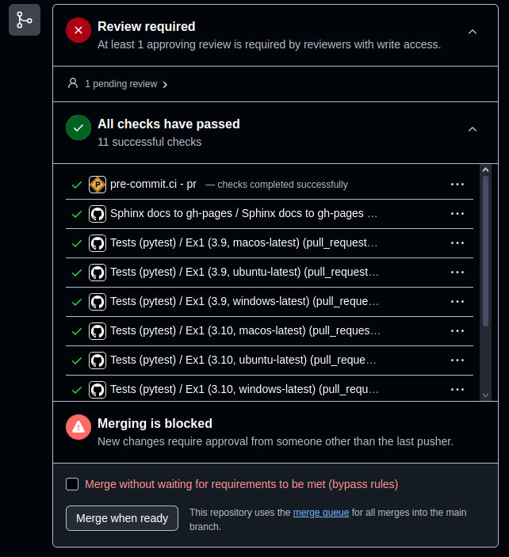
Code review
- Open process
- Contribution using GitHub’s Pull Requests
- Requires approval from at least one other person
- Prevents bad code from being added to the project
- Ensures against single-point of failure
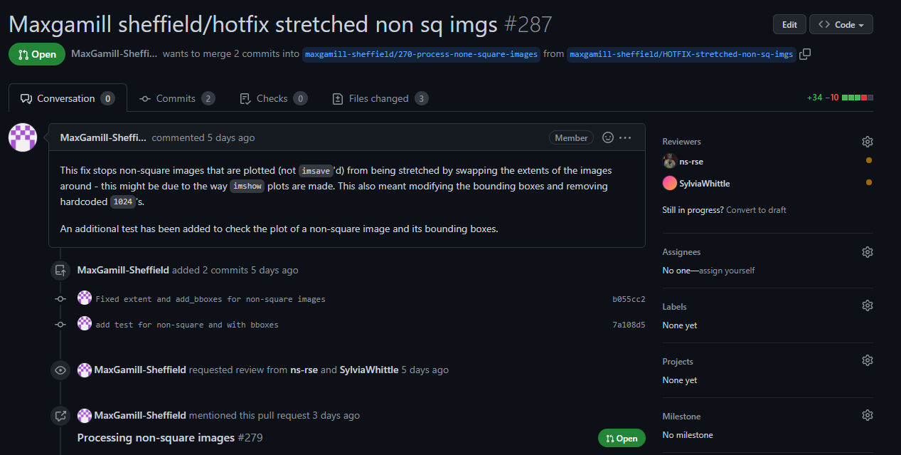
TopoStats 2.0 Installation and Usage
Installation
conda create -n topostats-311 python=3.11
conda activate topostats-311
pip install topostatsUsage
topostats process
[Thu, 27 Feb 2025 14:27:42] [INFO ] [topostats] Processing : minicircle
[Thu, 27 Feb 2025 14:27:42] [INFO ] [topostats] [minicircle] : *** Filtering ***
[Thu, 27 Feb 2025 14:27:45] [INFO ] [topostats] [minicircle] : Plotting Filtering Images
[Thu, 27 Feb 2025 14:27:46] [INFO ] [topostats] [minicircle] : Filters stage completed successfully.
[Thu, 27 Feb 2025 14:27:46] [INFO ] [topostats] [minicircle] : *** Grain Finding ***
[Thu, 27 Feb 2025 14:27:47] [INFO ] [topostats] [minicircle] : Grains found for direction above : 21
[Thu, 27 Feb 2025 14:27:47] [INFO ] [topostats] [minicircle] : Plotting Grain Finding Images
[Thu, 27 Feb 2025 14:27:47] [INFO ] [topostats] [minicircle] : Grain Finding stage completed successfully.
[Thu, 27 Feb 2025 14:27:47] [INFO ] [topostats] [minicircle] : *** Grain Statistics ***
[Thu, 27 Feb 2025 14:27:48] [INFO ] [topostats] [minicircle] : Calculated grainstats for 21 grains.
[Thu, 27 Feb 2025 14:27:48] [INFO ] [topostats] [minicircle] : Grainstats stage completed successfully.
[Thu, 27 Feb 2025 14:27:48] [INFO ] [topostats] [minicircle] : *** Disordered Tracing ***
[Thu, 27 Feb 2025 14:27:49] [INFO ] [topostats] [minicircle] : Calculating Disordered Tracing statistics for 21 grains...
[Thu, 27 Feb 2025 14:27:59] [INFO ] [topostats] [minicircle] : Disordered Tracing stage completed successfully.
[Thu, 27 Feb 2025 14:27:59] [INFO ] [topostats] [minicircle] : *** Nodestats ***
[Thu, 27 Feb 2025 14:27:59] [INFO ] [topostats] [minicircle] : Calculating NodeStats statistics for 21 grains...
[Thu, 27 Feb 2025 14:28:00] [INFO ] [topostats] [minicircle] : NodeStats stage completed successfully.
[Thu, 27 Feb 2025 14:28:00] [INFO ] [topostats] [minicircle] : *** Ordered Tracing ***
[Thu, 27 Feb 2025 14:28:00] [INFO ] [topostats] [minicircle] : Calculating Ordered Traces and statistics for 21 grains...
[Thu, 27 Feb 2025 14:28:03] [INFO ] [topostats] [minicircle] : Ordered Tracing stage completed successfully.
[Thu, 27 Feb 2025 14:28:03] [INFO ] [topostats] [minicircle] : *** Splining ***
[Thu, 27 Feb 2025 14:28:03] [INFO ] [topostats] [minicircle] : Calculating Splining statistics for 25 molecules...
[Thu, 27 Feb 2025 14:28:04] [INFO ] [topostats] [minicircle] : Splining stage completed successfully.
[Thu, 27 Feb 2025 14:28:04] [INFO ] [topostats] [minicircle] : *** Curvature Stats ***
[Thu, 27 Feb 2025 14:28:05] [INFO ] [topostats] [minicircle] : *** Image Statistics ***
[Thu, 27 Feb 2025 14:28:05] [INFO ] [topostats] [minicircle] : Saving image to .topostats file
Processing images from /home/neil/work/git/hub/AFM-SPM/TopoStats, results are under output: 50%|███████████████▌ | 1/2 [00:23<00:23, 23.33s/it][Thu, 27 Feb 2025 14:28:06] [INFO ] [topostats] [minicircle] Processing completed.
Processing images from /home/neil/work/git/hub/AFM-SPM/TopoStats, results are under output: 50%|███████████████▌ | 1/2 [00:23<00:23, 23.33s/it]
[Thu, 27 Feb 2025 14:28:06] [INFO ] [topostats] Saving image stats to : output/image_stats.csv.
[Thu, 27 Feb 2025 14:28:06] [INFO ] [topostats] Saving all height profiles to output/height_profiles.json
[Thu, 27 Feb 2025 14:28:06] [INFO ] [topostats] The YAML summarisation config is valid.
[Thu, 27 Feb 2025 14:28:06] [INFO ] [topostats] [plotting] Default variable to labels mapping loaded.
[Thu, 27 Feb 2025 14:28:06] [INFO ] [topostats] Summary plots and statistics will be saved to : output/summary_distributions
[Thu, 27 Feb 2025 14:28:08] [INFO ] [topostats] Folder-wise statistics saved to: output/tmp/filter/folder_grain_stats.csv
[Thu, 27 Feb 2025 14:28:08] [INFO ] [topostats] Folder-wise statistics saved to: output/tmp/filter/folder_disordered_trace_stats.csv
[Thu, 27 Feb 2025 14:28:08] [INFO ] [topostats] Folder-wise statistics saved to: output/tmp/filter/folder_mol_stats.csv
~~~~~~~~~~~~~~~~~~~~~~~~~~~~~~~~~~~~~~~~~~~~~~~~~~~~~~~~~~~~~~~~~~~~~~~~~~~~~~~~~~~~~~~~~~~~~~~~~~~~
_______ _____ __ __ _____ ______ _______ _____ _______ ______
/\_______)\ ) ___ ( /_/\__/\ ) ___ ( / ____/\ /\_______)\ /\___/\ /\_______)\ / ____/\
\(___ __\/ / /\_/\ \ ) ) ) ) ) / /\_/\ \ ) ) __\/ \(___ __\/ / / _ \ \ \(___ __\/ ) ) __\/
/ / / / /_/ (_\ \ /_/ /_/ / / /_/ (_\ \ \ \ \ / / / \ \(_)/ / / / / \ \ \
( ( ( \ \ )_/ / / \ \ \_\/ \ \ )_/ / / _\ \ \ ( ( ( / / _ \ \ ( ( ( _\ \ \
\ \ \ \ \/_\/ / )_) ) \ \/_\/ / )____) ) \ \ \ ( (_( )_) ) \ \ \ )____) )
/_/_/ )_____( \_\/ )_____( \____\/ /_/_/ \/_/ \_\/ /_/_/ \____\/
[Thu, 27 Feb 2025 14:28:08] [INFO ] [topostats]
~~~~~~~~~~~~~~~~~~~~~~~~~~~~~~~~~~~~~~~~~~~~~ COMPLETE ~~~~~~~~~~~~~~~~~~~~~~~~~~~~~~~~~~~~~~~~~~~~~
TopoStats Version : 2.3.2.dev27+gbe8d296d1
Base Directory : /home/neil/work/git/hub/AFM-SPM/TopoStats
File Extension : .spm
Files Found : 2
Successfully Processed^1 : 1 (50.0%)
All statistics : output/all_statistics.csv
Distribution Plots : output/summary_distributions
Configuration : output/config.yaml
Email : topostats@sheffield.ac.uk
Documentation : https://afm-spm.github.io/topostats/
Source Code : https://github.com/AFM-SPM/TopoStats/
Bug Reports/Feature Request : https://github.com/AFM-SPM/TopoStats/issues/new/choose
Citation File Format : https://github.com/AFM-SPM/TopoStats/blob/main/CITATION.cff
^1 Successful processing of an image is detection of grains and calculation of at least
grain statistics. If these have been disabled the percentage will be 0.
If you encounter bugs/issues or have feature requests please report them at the above URL
or email us.
If you have found TopoStats useful please consider citing it. A Citation File Format is
linked above and available from the Source Code page.
~~~~~~~~~~~~~~~~~~~~~~~~~~~~~~~~~~~~~~~~~~~~~~~~~~~~~~~~~~~~~~~~~~~~~~~~~~~~~~~~~~~~~~~~~~~~~~~~~~~~Extensibility - Detangling
- New functionality for disentangling molecules
- Under or Over? Tracing Complex DNA Structures with High Resolution Atomic Force Microscopy (under review at Nat Comms)
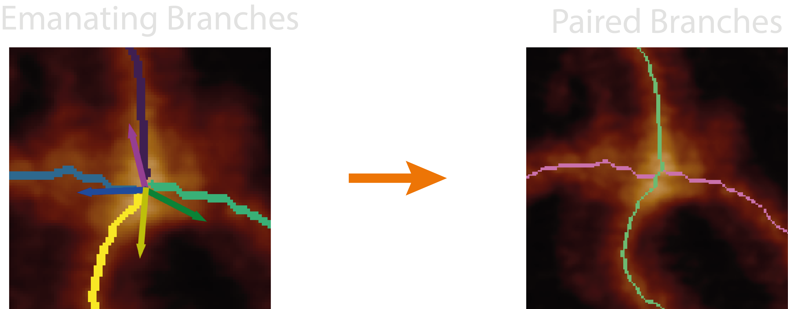 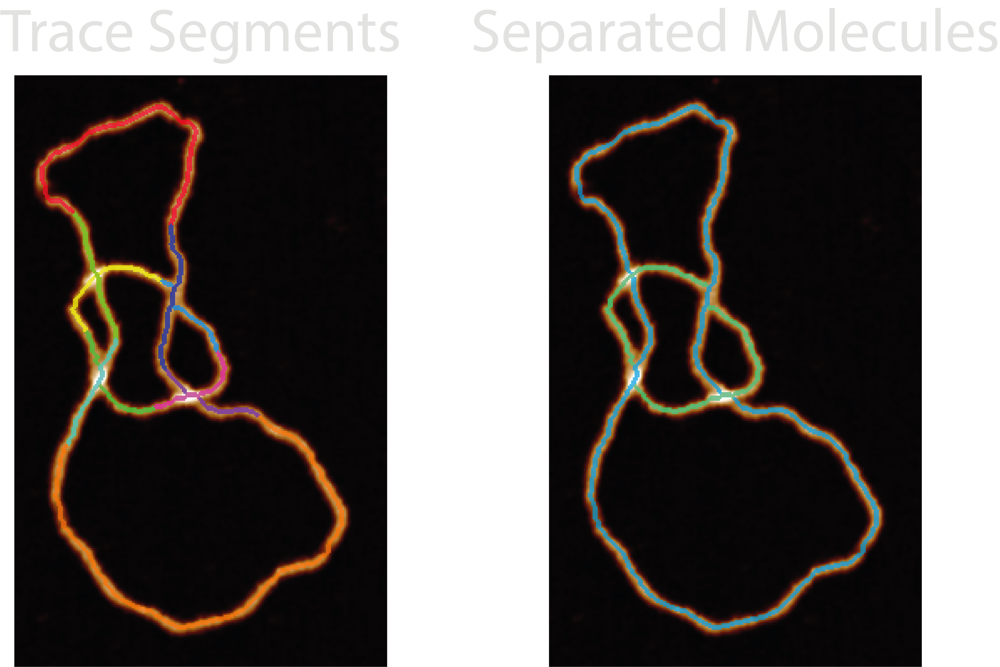 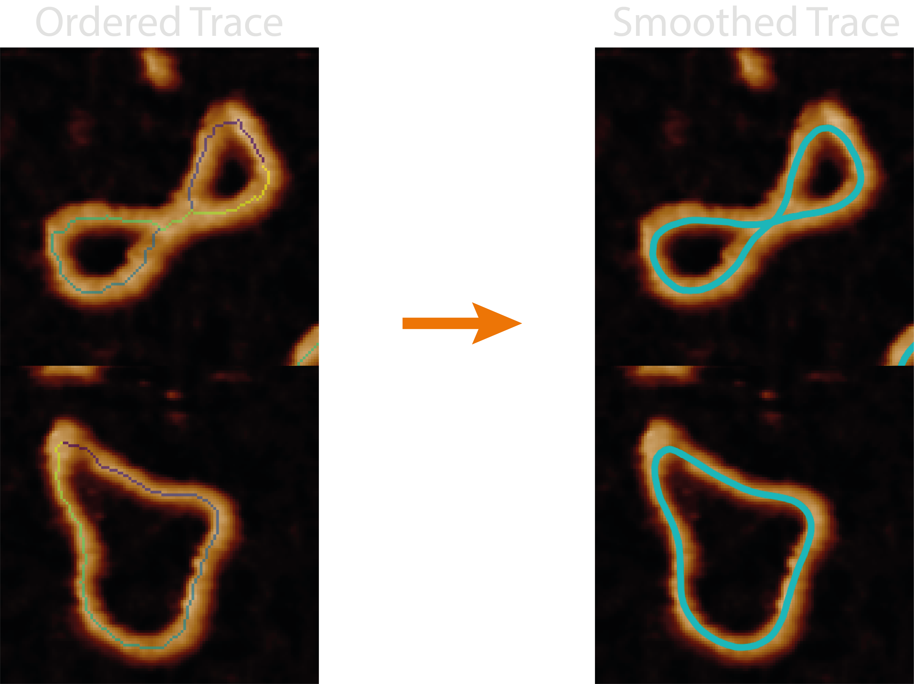
Extensibility - Splinning
- Splining of traces
Three years on
- Findable
- Easy to find, with a unique identifier for each version ✅
- Metadata (summary info, eg License, Website, coding language) ✅
- Accessible
- Retrievable using a free and open protocol ✅
- Metadata are accessible, even when the software is no longer available ✅
- Interoperable
- Software uses data in a way that meets community standards ✅
- Software includes references to other objects ✅
- Reusable
- Metadata (how to use) and License ✅
- Detailled provenance (information on its context, maintainers and dependencies) ✅
Shared Skills and Knowledge
- Not an individual endeavour!
- Researchers and PhD students wrote a lot of code
- Code review ensure many know and understand how it works
- No single point of failure
- Team adopted good working practices
- Important training and transferable skills
Benefits and drawbacks of Open Research / Software
Benefits
Openness Leads to…
- Collaboration
- Sharing data, methods, code
- Faster and efficient progress (…most of the time!)
- Fosters community
- Inclusivity
- Data and software are free to access
- Greater impact
- More accessible to a wider audience
- Transparency and constructive criticism
- Enables and even encourages people to critique methods that are used.
- Reproduciblility
- Others can more easily replicate research
Drawbacks
- Chaos in open software development
- As the community grows, so do the feature requests and issues!
- Competing demands of users, collaborators, work
- Sporadic nature of working with people with varying availability
Acknowledgements
I would like to thank everyone who has worked on and helped with TopoStats. This was a massive group effort.
- Alice Pyne
- Billie Ward
- Bob Turner
- Eddie Rollins
- Jean Du
- Joe Beton
- Laura Wiggins
- Libby Holmes
- Max Gamill
- Neil Shephard
- Rob Moorehead
- Sylvia Whittle
- Tobi Firth
RSE TopoStats Case Study
Slides : ns-rse.github.io/topostats-showcase